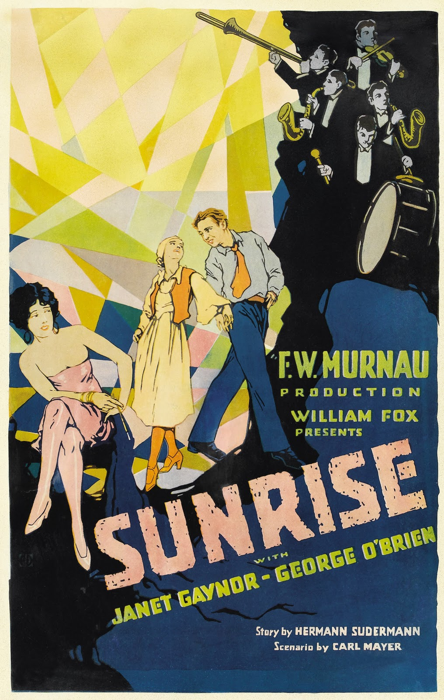
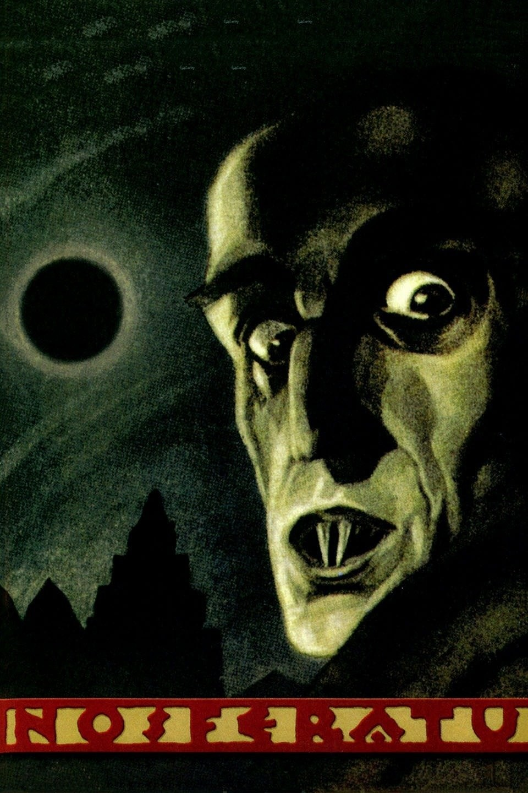

The Birth of a Nation
Early cinematic landmark in scale and editing, controversial in historical context.

Metropolis
A dystopian vision of class struggle in a massive futuristic city.

Battleship Potemkin
A defining montage film famous for its emotional intensity and editing rhythm.

The Cabinet of Dr. Caligari
Expressionist horror with warped sets and psychological storytelling.

The General
Buster Keaton’s silent comedy masterpiece of precision stunt work.

Sunrise: A Song of Two Humans
A visually poetic love story known for its emotional storytelling and groundbreaking camera movement.

Nosferatu (1922)
An unauthorized adaptation of Dracula, defining early horror through shadow, silence, and expressionist design.
Although a groundbreaking period, the Silent Film Era slowly died due to the rapid adoption of synchronized sound in film, ushering in a new period and new wave of cutting-edge ways to immerse in the medium. Nevertheless, the Silent Film Era is foundational with introducing the world (later known as "audiences") to the art of film and how it can be viewed and how the medium expresses itself through creative liberties.